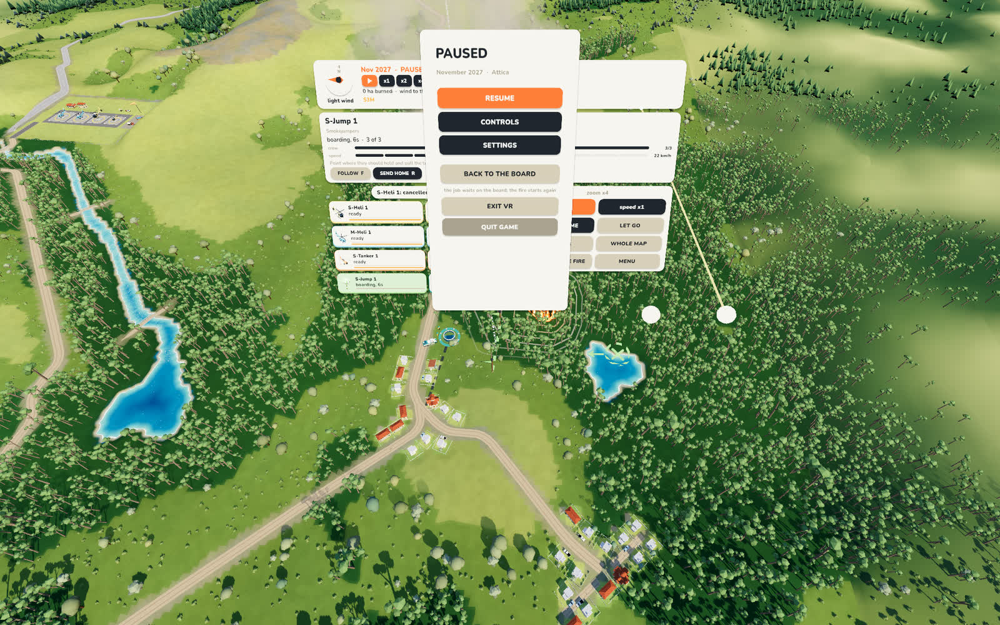
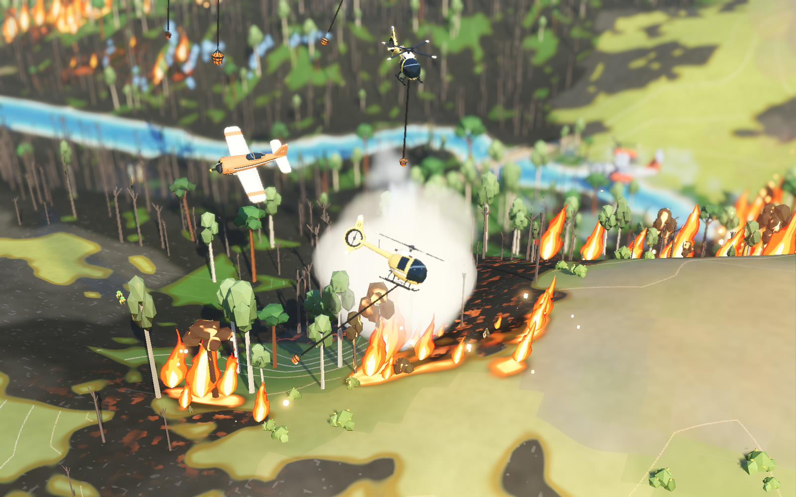
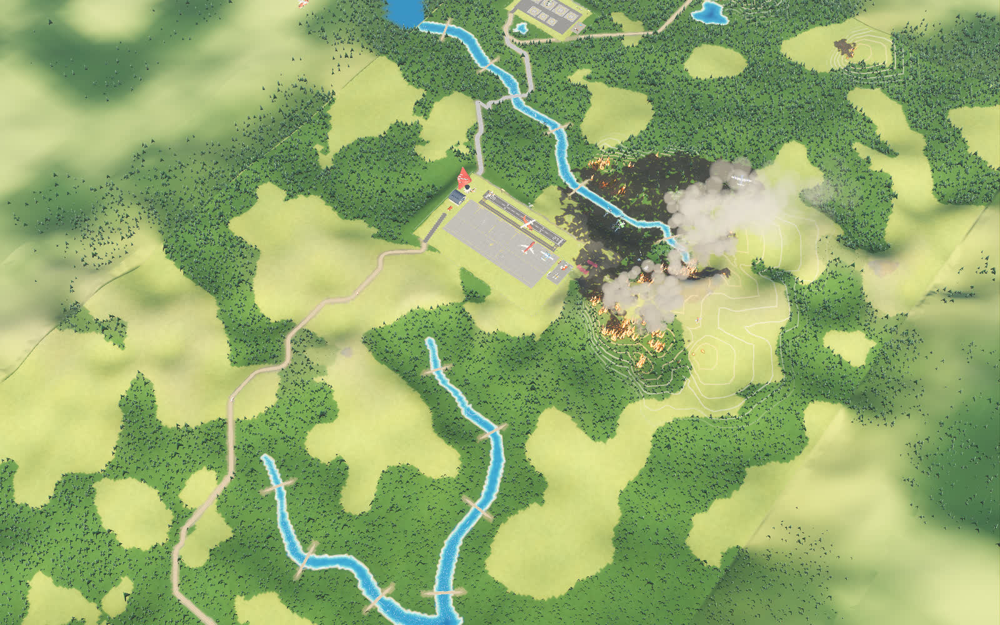
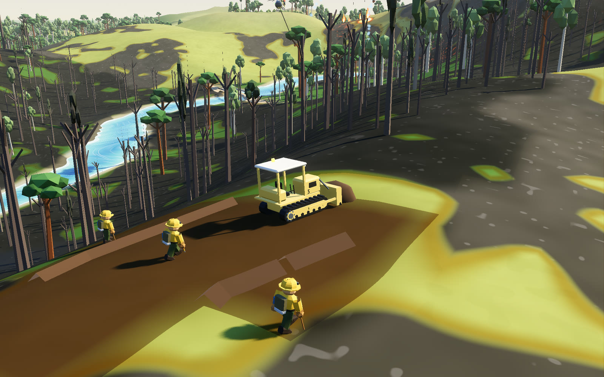

VR Prototype
A wildfire on your table

AeroFire Command in a headset: the fire map becomes a table at waist height, the fleet is a shelf of miniatures in your left hand, and you give orders by putting an aircraft down where you want it.
Our wildfire game is already a diorama on a PC screen: small aircraft over a small forest. The obvious question was what happens if you stand next to it. So the PC build has a second way to play. One button on the title screen restarts the game inside the headset, and another brings it back.
How it plays
- The player is scaled, not the map. It is the same simulation and the same orders as the flat game, on a board 2.4 metres long.
- Your left hand holds a shelf of four-centimetre miniatures, one for every machine and crew you own, and a tablet with the game's menus on it.
- Your right hand is a laser. Grip a miniature, hold it over the map, and it hangs on a thread to the ground while time slows. Let go, and that is the order.
- The world is held, not flown. One grip pulls the table toward you. Two grips stretch and turn it: move your hands twice as far apart and you are four times closer.
- Three views are a stick-click apart: the whole map, five times closer, twenty-five times closer.
What the first session taught us
- The player started under the table. Standing height is the first thing to get right.
- Tracked hands have no buttons, so Start and Pause moved onto the tablet.
- The lag was the graphics card. The headset draws 2,296 by 2,456 pixels for each eye, and the game managed 71 to 88 frames a second of the 90 it needs. The VR mode now drops the fog, the colour grade and the glow.
- Zoom that scales about your head feels wrong. Zoom that scales about a point on the map feels like pulling the map closer, which is what you meant.
Where it is
It works on a PC with any SteamVR headset, or a Quest connected to the PC. There are no hand models yet, only two white spheres and a laser, and no room around the table. The biggest map, with nearly forty thousand trees, has not been measured in the headset. A version that runs on the Quest by itself is on the shelf for now.
If you would play a strategy game standing at a table for an hour, or know why you would not, the thread is open.
Pictures








Talk about this one
Questions, ideas, “you should try this instead”: the thread for this experiment is open to anyone.
The forum runs on GitHub Discussions. Reading is open to all; posting needs a free GitHub account.
More experiments
 Robots · Tools
Eva and Adam, taken apart
Two humanoid robots live in our workshop. We write the software that makes one of them see, listen and pull faces, and we built a 3D guide that takes both of them apart screw by screw.
In progress
Robots · Tools
Eva and Adam, taken apart
Two humanoid robots live in our workshop. We write the software that makes one of them see, listen and pull faces, and we built a 3D guide that takes both of them apart screw by screw.
In progress
 Art direction
One wheel, four tables
In Souls & Estates one mouse wheel now takes you from a single peasant yard to a table map of central Russia, through four dioramas of the same place.
You can try it
Art direction
One wheel, four tables
In Souls & Estates one mouse wheel now takes you from a single peasant yard to a table map of central Russia, through four dioramas of the same place.
You can try it
 New platform
A game inside a Reddit post
What if you did not have to leave the feed to play? We put Gull Chorus, our seagull flock game, inside a Reddit post: one post is one beach, with a leaderboard under it.
In progress
New platform
A game inside a Reddit post
What if you did not have to leave the feed to play? We put Gull Chorus, our seagull flock game, inside a Reddit post: one post is one beach, with a leaderboard under it.
In progress